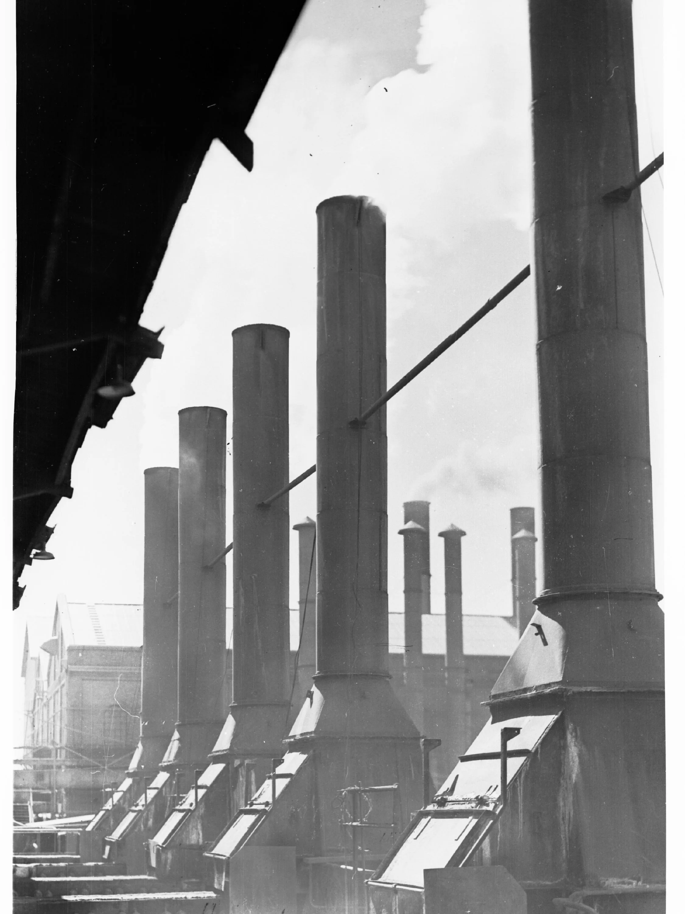
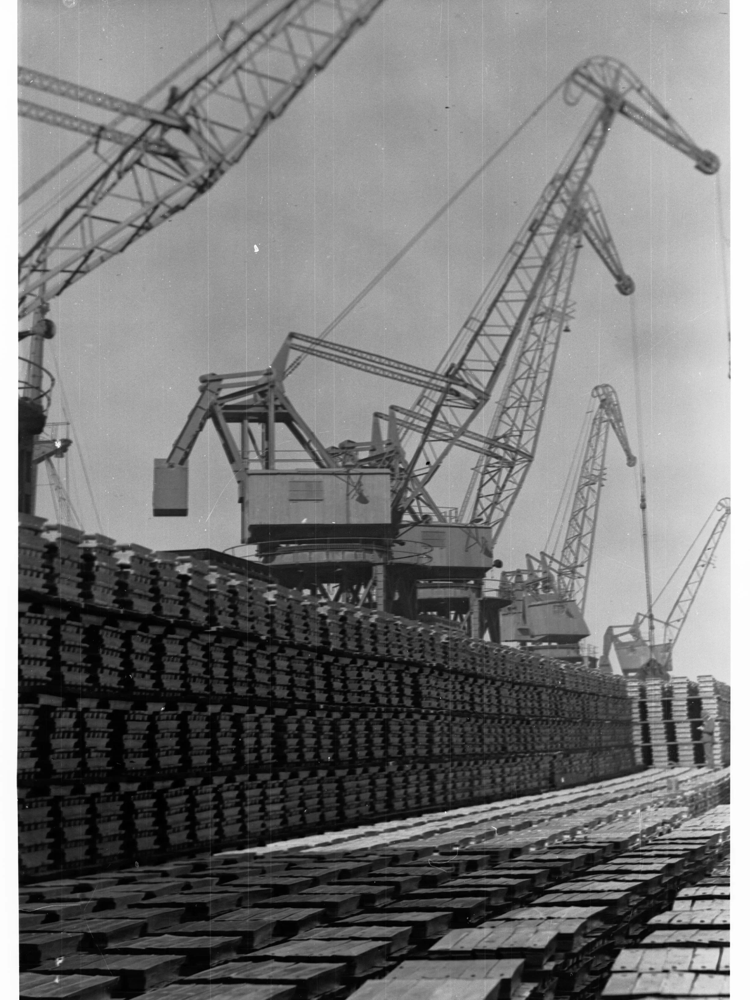

영풍 석포제련소 오염토 12만㎥ 추가 확인…10년째 정화율 0%
경북 봉화에 위치한 영풍 석포제련소의 토양오염 문제가 올해 국정감사에서도 반복해 도마에 올랐다. 지난 6일 열린 기후에너지환경부 국정감사에서는 10년 넘게 이어지고 있는 석포제련소 토양정화 지연 문제가 다시 쟁점이 됐다. 환경당국이 토양정화명령을 내린 지 10년이 지났지만, 산업단지 예정부지에 대한 면적 기준 정화 이행률은 여전히 0%에 머물러 있는 것으로 확인됐다.
국민의힘 김형동 의원은 이날 국감에서 석포제련소 문제를 거론하며 "석포제련소 사건은 중대범죄라고 생각한다"고 강하게 지적했다. 기존 행정명령에 따라 정화해야 할 토량은 81만5203.7㎥에 달하는데, 실제 굴착과 정화 작업을 진행하는 과정에서 이와는 별도로 약 12만5000㎥에 이르는 오염토가 추가로 확인됐다는 사실도 함께 공개됐다. 애초 예상보다 오염 범위가 훨씬 넓다는 점이 드러나면서 우려가 커지고 있다.

특히 동스파이스 보관 장소에서는 기존 정화명령 대상이었던 2만4545㎥의 세 배가 넘는 7만4170㎥의 오염토가 새로 발견된 것으로 나타났다. 당초 명령 범위를 훌쩍 뛰어넘는 규모의 오염토가 뒤늦게 확인됐다는 점에서, 그동안의 조사와 관리가 얼마나 부실했는지를 보여주는 사례로 꼽힌다. 석포제련소는 국내 아연 생산의 상당 부분을 담당하는 핵심 시설이지만, 그만큼 주변 토양과 낙동강 상류 수계에 미치는 영향에 대한 우려도 꾸준히 제기돼 왔다.
기후에너지환경부는 국감에서 제기된 지적에 대해 "법에 따라 엄정하게 조치하겠다"는 원론적인 답변을 내놓았다. 하지만 정화명령이 내려진 지 10년이 지나도록 이행률이 0%에 그치고, 추가 오염토까지 속속 발견되는 상황에서 환경당국의 관리·감독 체계 자체에 근본적인 문제가 있다는 비판이 여야를 가리지 않고 나오고 있다. 정화 작업의 속도와 범위를 둘러싼 기업과 당국 간의 입장 차이도 지연의 한 원인으로 지목된다.

석포제련소 환경오염 문제는 10년 넘게 국정감사의 '단골 메뉴'로 지적받으면서도 뚜렷한 진전을 보이지 못하고 있다는 점에서 더욱 논란이 되고 있다. 매년 비슷한 지적이 반복되고, 정화 대상 토량이 조사를 할 때마다 늘어나는 패턴이 이어지고 있어 근본적인 해결책 없이는 문제가 장기화될 수밖에 없다는 우려가 나온다. 낙동강 상류 지역 주민들과 환경단체들은 토양·수질 오염이 식수원 안전과도 직결될 수 있다며 조속한 정화와 투명한 정보 공개를 요구하고 있다.
국회는 이번 국감 지적을 바탕으로 환경부에 정화 이행 계획과 일정에 대한 구체적인 답변을 요구할 방침이다. 다만 과거에도 비슷한 요구가 여러 차례 있었지만 가시적인 성과로 이어지지 못했던 전례를 고려하면, 이번에도 지적에 그치지 않고 실질적인 정화 조치로 이어질지는 지켜봐야 한다는 신중론도 제기된다. 여야 의원들은 환경부가 다음 국감 때까지 구체적인 이행률 수치와 추가 오염토 처리 일정을 보고하도록 요구하겠다는 입장을 밝혔다.
업계에서는 석포제련소가 국내 아연 공급망에서 차지하는 비중이 큰 만큼, 정화 작업과 생산 활동을 병행하는 과정에서 속도를 내기 어렵다는 현실적인 어려움도 거론된다. 그러나 10년이라는 시간 동안 이행률이 전혀 움직이지 않았다는 사실 자체가 기업의 소극적 대응과 당국의 느슨한 관리·감독이 맞물린 결과라는 비판을 피하기는 어려워 보인다. 이번 국감을 계기로 정화 명령의 실효성을 높이는 제도 개선 논의가 본격화될지 주목된다.